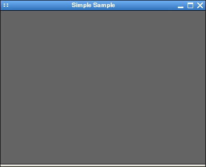

SGUI
Using the SGUI library
Creating and using windows
Windows in SGUI are represented by the
sgui_window
structure. To create
a window, simply call the sgui_window_create function which takes
three parameters:
sgui_window* sgui_window_create( sgui_window* parent,
unsigned int width,
unsigned int height,
int resizeable );
- The first parameter specifies the parent window. NULL means to
create the window on the root/desktop window, a pointer to an existing
window makes the new window to a child window of the existing one.
Child windows are only visible inside their parent and are not managed by
the systems window manager.
- The next two parameters, width and height, specify the
size of the windows drawing area in pixels (i.e. the area inside the
window, not taking the window borders into account).
- The next paramter, resizeable specifies whether the user should be
able to resize the window with the mouse or not.
- The constants SGUI_FIXED_SIZE and SGUI_RESIZEABLE are
provided so you don't have to pass the magic values 0 and
1 (nonzero) to the function.
The functions returns a pointer to an sgui_window struct on success, or
NULL on error. All functions operating on a window take that pointer as
a first parameter and are named sgui_window_*.
If the function succeeds and a window is created, the window is initially
invisible. To make it visible and allow the user to interact with it, the
following function is used:
void sgui_window_set_visible( sgui_window* wnd, int visible );
As you can see, the function name starts with the name of the data structure
it works on and takes a pointer to it as a first parameter.
The sgui_window_set_visible function takes an argument, indicating
whether the window should be visible or not. Again, there are constants
(SGUI_INVISIBLE and SGUI_VISIBLE) to avoid magic values.
Once you are done using your window, you should destroy it (i.e. free its
resources to avoid leaks). The following function is used for doing so:
void sgui_window_destroy( sgui_window* wnd );
The naming scheme of SGUI functions should be pretty straight forward:
- Functions operating on objects start with the name of the object and take
a pointer to it as their first argument.
E.g. functions operating on sgui_window are named
sgui_window_* and take a sgui_window pointer as first
argument.
- Functions for creating SGUI objects are always named create.
E.g. the function for creating an sgui_window is named
sgui_window_create.
- Functions for freeing SGUI objects are always named destroy.
E.g. the function for destroying an sgui_window is named
sgui_window_destroy.
With this in mind, it should be easy to understand what SGUI functions do from
reading their name. So lets take a look at a simple example that uses some
window functions:
#include "sgui.h"
int main( )
{
sgui_window* wnd;
sgui_init( );
wnd = sgui_window_create( NULL, 400, 300, SGUI_RESIZEABLE );
sgui_window_set_title( wnd, "Simple Sample" );
sgui_window_move_center( wnd );
sgui_window_set_visible( wnd, SGUI_VISIBLE );
sgui_main_loop( );
sgui_window_destroy( wnd );
sgui_deinit( );
return 0;
}
If you compile the program (with command line presented previously, or your
favourite IDE) and run it, you will see a blank, 400*300 pixel window in the
center of your screen (assuming your window manager didn't resize it) and the
title bar of the window will say "Simple Sample".
The final result should look something like this:

The title bar of the window is set by calling sgui_window_set_title and
the window is moved to the center of the screen by calling
sgui_window_move_center.
You will notice that you can maximze the window or randomly resize it (if your
window manager allows that). This is because the window has been created with
the SGUI_RESIZEABLE argument. If we had used SGUI_FIXED_SIZE you
would not be able to resize or maximize the window.
Also note, that the destroy is called after the main loop, but before
the deinit function. It is a requirement that the
sgui_deinit function is the last SGUI function you call and
likewise sgui_init the first SGUI function you call.
In this example, the sgui_main_loop function does not return until the
user closes the window. When that happens, the function returns, the window
gets destroyed (pressing the close button only makes it invisible) and the
program exits.
With this in mind, it should be easy to play around with various window
functions (just take a look at the "sgui_window.h" header or at the
doxygen documentation).
Previous
Back to index
Next